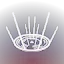
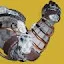

PvE 冷却
| 技能 | 图标 | 回复倍率 | 0 属性 |
10 属性 |
20 属性 |
30 属性 |
40 属性 |
50 属性 |
60 属性 |
70 属性 |
80 属性 |
90 属性 |
100 属性 |
|---|---|---|---|---|---|---|---|---|---|---|---|---|---|
| 手雷 · 猎人与泰坦 | |||||||||||||
| 闪电手雷 | 0.5× | 219.5 | 204.8 | 184.1 | 160.1 | 136.3 | 116.4 | 101.0 | 85.5 | 83.6 | 81.7 | 79.8 | |
| 烈日手雷 | 0.5× | 219.5 | 204.8 | 184.1 | 160.1 | 136.3 | 116.4 | 101.0 | 85.5 | 83.6 | 81.7 | 79.8 | |
| 涡流手雷 | 0.5× | 219.5 | 204.8 | 184.1 | 160.1 | 136.3 | 116.4 | 101.0 | 85.5 | 83.6 | 81.7 | 79.8 | |
| 量子光束 | 0.5× | 219.5 | 204.8 | 184.1 | 160.1 | 136.3 | 116.4 | 101.0 | 85.5 | 83.6 | 81.7 | 79.8 | |
| 坚不可摧 | 0.5× | 219.5 | 204.8 | 184.1 | 160.1 | 136.3 | 116.4 | 101.0 | 85.5 | 83.6 | 81.7 | 79.8 | |
| 束缚手雷 | 0.5× | 219.5 | 204.8 | 184.1 | 160.1 | 136.3 | 116.4 | 101.0 | 85.5 | 83.6 | 81.7 | 79.8 | |
| 风暴手雷 | 0.625× | 175.6 | 163.8 | 147.3 | 128.1 | 109.0 | 93.1 | 80.8 | 68.4 | 66.8 | 65.4 | 63.9 | |
| 脉冲手雷 | 0.625× | 175.6 | 163.8 | 147.3 | 128.1 | 109.0 | 93.1 | 80.8 | 68.4 | 66.8 | 65.4 | 63.9 | |
| 感应手雷 | 0.625× | 175.6 | 163.8 | 147.3 | 128.1 | 109.0 | 93.1 | 80.8 | 68.4 | 66.8 | 65.4 | 63.9 | |
| 铝热手雷 | 0.625× | 175.6 | 163.8 | 147.3 | 128.1 | 109.0 | 93.1 | 80.8 | 68.4 | 66.8 | 65.4 | 63.9 | |
| 抑制手雷 | 0.625× | 175.6 | 163.8 | 147.3 | 128.1 | 109.0 | 93.1 | 80.8 | 68.4 | 66.8 | 65.4 | 63.9 | |
| 虚空尖刺 | 0.625× | 175.6 | 163.8 | 147.3 | 128.1 | 109.0 | 93.1 | 80.8 | 68.4 | 66.8 | 65.4 | 63.9 | |
| 虚空墙壁 | 0.625× | 175.6 | 163.8 | 147.3 | 128.1 | 109.0 | 93.1 | 80.8 | 68.4 | 66.8 | 65.4 | 63.9 | |
| 急冻手雷 | 0.625× | 175.6 | 163.8 | 147.3 | 128.1 | 109.0 | 93.1 | 80.8 | 68.4 | 66.8 | 65.4 | 63.9 | |
| 冰川手雷 | 0.625× | 175.6 | 163.8 | 147.3 | 128.1 | 109.0 | 93.1 | 80.8 | 68.4 | 66.8 | 65.4 | 63.9 | |
| 线虫手雷 | 0.625× | 175.6 | 163.8 | 147.3 | 128.1 | 109.0 | 93.1 | 80.8 | 68.4 | 66.8 | 65.4 | 63.9 | |
| 电光手雷 | 0.75× | 151.5 | 141.3 | 127.1 | 110.5 | 94.0 | 80.3 | 69.7 | 59.0 | 57.7 | 56.4 | 55.1 | |
| 弹跳手雷 | 0.75× | 151.5 | 141.3 | 127.1 | 110.5 | 94.0 | 80.3 | 69.7 | 59.0 | 57.7 | 56.4 | 55.1 | |
| 燃烧手雷 | 0.75× | 151.5 | 141.3 | 127.1 | 110.5 | 94.0 | 80.3 | 69.7 | 59.0 | 57.7 | 56.4 | 55.1 | |
| 蜂群手雷 | 0.75× | 151.5 | 141.3 | 127.1 | 110.5 | 94.0 | 80.3 | 69.7 | 59.0 | 57.7 | 56.4 | 55.1 | |
| 散射手雷 | 0.75× | 151.5 | 141.3 | 127.1 | 110.5 | 94.0 | 80.3 | 69.7 | 59.0 | 57.7 | 56.4 | 55.1 | |
| 磁性手雷 | 0.75× | 151.5 | 141.3 | 127.1 | 110.5 | 94.0 | 80.3 | 69.7 | 59.0 | 57.7 | 56.4 | 55.1 | |
| 闪光手雷 | 0.875× | 131.7 | 122.9 | 110.5 | 96.1 | 81.8 | 69.8 | 60.6 | 51.3 | 50.1 | 49.0 | 47.9 | |
| 治愈手雷 | 0.875× | 131.7 | 122.9 | 110.5 | 96.1 | 81.8 | 69.8 | 60.6 | 51.3 | 50.1 | 49.0 | 47.9 | |
| 暮域手雷 | 0.875× | 131.7 | 122.9 | 110.5 | 96.1 | 81.8 | 69.8 | 60.6 | 51.3 | 50.1 | 49.0 | 47.9 | |
| 抓钩 | 0.875× | 118.7 | 110.7 | 99.6 | 86.6 | 73.7 | 62.9 | 54.6 | 46.2 | 45.2 | 44.2 | 43.2 | |
| 粘性电浆手雷 | 0.875× | 105.4 | 98.3 | 88.4 | 76.9 | 65.4 | 55.9 | 48.5 | 41.1 | 40.1 | 39.2 | 38.3 | |
| 守蛾人裹手 | 1× | 105.4 | 98.3 | 88.4 | 76.9 | 65.4 | 55.9 | 48.5 | 41.1 | 40.1 | 39.2 | 38.3 | |
| 融合手雷 | 1× | 105.4 | 98.3 | 88.4 | 76.9 | 65.4 | 55.9 | 48.5 | 41.1 | 40.1 | 39.2 | 38.3 | |
| 烈焰手雷 | 1× | 92.2 | 86.0 | 77.3 | 67.3 | 57.2 | 48.9 | 42.4 | 35.9 | 35.1 | 34.3 | 33.5 | |
| 手雷 · 术士 | |||||||||||||
| 闪电手雷 | 0.5× | 199.5 | 186.1 | 167.4 | 145.5 | 123.8 | 105.8 | 91.8 | 77.7 | 75.9 | 74.2 | 72.5 | |
| 烈日手雷 | 0.5× | 199.5 | 186.1 | 167.4 | 145.5 | 123.8 | 105.8 | 91.8 | 77.7 | 75.9 | 74.2 | 72.5 | |
| 涡流手雷 | 0.5× | 199.5 | 186.1 | 167.4 | 145.5 | 123.8 | 105.8 | 91.8 | 77.7 | 75.9 | 74.2 | 72.5 | |
| 量子光束 | 0.5× | 199.5 | 186.1 | 167.4 | 145.5 | 123.8 | 105.8 | 91.8 | 77.7 | 75.9 | 74.2 | 72.5 | |
| 束缚手雷 | 0.5× | 199.5 | 186.1 | 167.4 | 145.5 | 123.8 | 105.8 | 91.8 | 77.7 | 75.9 | 74.2 | 72.5 | |
| 风暴手雷 | 0.625× | 159.6 | 148.9 | 133.9 | 116.4 | 99.1 | 84.6 | 73.4 | 62.2 | 60.8 | 59.4 | 58.0 | |
| 脉冲手雷 | 0.625× | 159.6 | 148.9 | 133.9 | 116.4 | 99.1 | 84.6 | 73.4 | 62.2 | 60.8 | 59.4 | 58.0 | |
| 感应手雷 | 0.625× | 159.6 | 148.9 | 133.9 | 116.4 | 99.1 | 84.6 | 73.4 | 62.2 | 60.8 | 59.4 | 58.0 | |
| 铝热手雷 | 0.625× | 159.6 | 148.9 | 133.9 | 116.4 | 99.1 | 84.6 | 73.4 | 62.2 | 60.8 | 59.4 | 58.0 | |
| 抑制手雷 | 0.625× | 159.6 | 148.9 | 133.9 | 116.4 | 99.1 | 84.6 | 73.4 | 62.2 | 60.8 | 59.4 | 58.0 | |
| 虚空尖刺 | 0.625× | 159.6 | 148.9 | 133.9 | 116.4 | 99.1 | 84.6 | 73.4 | 62.2 | 60.8 | 59.4 | 58.0 | |
| 虚空墙壁 | 0.625× | 159.6 | 148.9 | 133.9 | 116.4 | 99.1 | 84.6 | 73.4 | 62.2 | 60.8 | 59.4 | 58.0 | |
| 急冻手雷 | 0.625× | 159.6 | 148.9 | 133.9 | 116.4 | 99.1 | 84.6 | 73.4 | 62.2 | 60.8 | 59.4 | 58.0 | |
| 冰川手雷 | 0.625× | 159.6 | 148.9 | 133.9 | 116.4 | 99.1 | 84.6 | 73.4 | 62.2 | 60.8 | 59.4 | 58.0 | |
| 暮域手雷 凄凉观察者 | 0.625× | 159.6 | 148.9 | 133.9 | 116.4 | 99.1 | 84.6 | 73.4 | 62.2 | 60.8 | 59.4 | 58.0 | |
| 线虫手雷 | 0.625× | 159.6 | 148.9 | 133.9 | 116.4 | 99.1 | 84.6 | 73.4 | 62.2 | 60.8 | 59.4 | 58.0 | |
| 治愈手雷 凄凉观察者 | 0.875× | 159.6 | 148.9 | 133.9 | 116.4 | 99.1 | 84.6 | 73.4 | 62.2 | 60.8 | 59.4 | 58.0 | |
| 抑制手雷 混沌加速 | 0.625× | 138.4 | 129.1 | 116.1 | 100.9 | 85.9 | 73.4 | 63.7 | 53.9 | 52.7 | 51.5 | 50.3 | |
| 虚空尖刺 混沌加速 | 0.625× | 138.4 | 129.1 | 116.1 | 100.9 | 85.9 | 73.4 | 63.7 | 53.9 | 52.7 | 51.5 | 50.3 | |
| 虚空墙壁 混沌加速 | 0.625× | 138.4 | 129.1 | 116.1 | 100.9 | 85.9 | 73.4 | 63.7 | 53.9 | 52.7 | 51.5 | 50.3 | |
| 电光手雷 | 0.75× | 137.7 | 128.5 | 115.5 | 100.4 | 85.5 | 73.0 | 63.3 | 53.6 | 52.4 | 51.2 | 50.1 | |
| 弹跳手雷 | 0.75× | 137.7 | 128.5 | 115.5 | 100.4 | 85.5 | 73.0 | 63.3 | 53.6 | 52.4 | 51.2 | 50.1 | |
| 燃烧手雷 | 0.75× | 137.7 | 128.5 | 115.5 | 100.4 | 85.5 | 73.0 | 63.3 | 53.6 | 52.4 | 51.2 | 50.1 | |
| 蜂群手雷 | 0.75× | 137.7 | 128.5 | 115.5 | 100.4 | 85.5 | 73.0 | 63.3 | 53.6 | 52.4 | 51.2 | 50.1 | |
| 散射手雷 | 0.75× | 137.7 | 128.5 | 115.5 | 100.4 | 85.5 | 73.0 | 63.3 | 53.6 | 52.4 | 51.2 | 50.1 | |
| 磁性手雷 | 0.75× | 137.7 | 128.5 | 115.5 | 100.4 | 85.5 | 73.0 | 63.3 | 53.6 | 52.4 | 51.2 | 50.1 | |
| 闪光手雷 | 0.875× | 119.7 | 111.7 | 100.4 | 87.3 | 74.3 | 63.5 | 55.1 | 46.6 | 45.6 | 44.5 | 43.5 | |
| 治愈手雷 | 0.875× | 119.7 | 111.7 | 100.4 | 87.3 | 74.3 | 63.5 | 55.1 | 46.6 | 45.6 | 44.5 | 43.5 | |
| 暮域手雷 | 0.875× | 119.7 | 111.7 | 100.4 | 87.3 | 74.3 | 63.5 | 55.1 | 46.6 | 45.6 | 44.5 | 43.5 | |
| 磁性手雷 混沌加速 | 0.75× | 119.4 | 111.4 | 100.2 | 87.1 | 74.1 | 63.3 | 54.9 | 46.5 | 45.5 | 44.4 | 43.4 | |
| 抓钩 | 0.875× | 107.9 | 100.7 | 90.5 | 78.7 | 67.0 | 57.2 | 49.6 | 42.0 | 41.1 | 40.2 | 39.2 | |
| 粘性电浆手雷 | 0.875× | 95.8 | 89.4 | 80.4 | 69.9 | 59.5 | 50.8 | 44.1 | 37.3 | 36.5 | 35.7 | 34.8 | |
| 融合手雷 | 1× | 95.8 | 89.4 | 80.4 | 69.9 | 59.5 | 50.8 | 44.1 | 37.3 | 36.5 | 35.7 | 34.8 | |
| 烈焰手雷 | 1× | 83.8 | 78.2 | 70.3 | 61.1 | 52.0 | 44.4 | 38.5 | 32.6 | 31.9 | 31.2 | 30.5 | |
| 近战 | |||||||||||||
| 权衡飞刀 | 0.6× | 197.9 | 184.6 | 166.0 | 144.3 | 122.8 | 104.9 | 91.0 | 77.1 | 75.3 | 73.7 | 72.0 | |
| 弹道猛击 | 0.7× | 164.6 | 153.5 | 138.1 | 120.1 | 102.2 | 87.3 | 75.7 | 64.1 | 62.7 | 61.3 | 59.9 | |
| 球形闪电 | 0.7× | 164.6 | 153.5 | 138.1 | 120.1 | 102.2 | 87.3 | 75.7 | 64.1 | 62.7 | 61.3 | 59.9 | |
| 星界之火 | 0.7× | 162.6 | 151.7 | 136.4 | 118.6 | 100.9 | 86.2 | 74.8 | 63.3 | 61.9 | 60.5 | 59.1 | |
| 感应爆炸飞刀 | 0.7× | 161.3 | 150.5 | 135.3 | 117.7 | 100.1 | 85.5 | 74.2 | 62.8 | 61.4 | 60.0 | 58.7 | |
| 战栗打击 | 0.7× | 146.3 | 136.5 | 122.7 | 106.7 | 90.8 | 77.6 | 67.3 | 57.0 | 55.7 | 54.4 | 53.2 | |
| 半影冲击 | 0.8× | 146.3 | 136.5 | 122.7 | 106.7 | 90.8 | 77.6 | 67.3 | 57.0 | 55.7 | 54.4 | 53.2 | |
| 轻质飞刀 | 0.8× | 145.2 | 135.4 | 121.8 | 105.9 | 90.1 | 77.0 | 66.8 | 56.6 | 55.3 | 54.0 | 52.8 | |
| 枯萎之刃 | 0.8× | 145.2 | 135.4 | 121.8 | 105.9 | 90.1 | 77.0 | 66.8 | 56.6 | 55.3 | 54.0 | 52.8 | |
| 线织尖刺 | 0.8× | 145.2 | 135.4 | 121.8 | 105.9 | 90.1 | 77.0 | 66.8 | 56.6 | 55.3 | 54.0 | 52.8 | |
| 圣盾强袭 | 0.7× | 131.7 | 122.9 | 110.5 | 96.1 | 81.8 | 69.8 | 60.6 | 51.3 | 50.1 | 49.0 | 47.9 | |
| 地震打击 | 0.8× | 131.7 | 122.9 | 110.5 | 96.1 | 81.8 | 69.8 | 60.6 | 51.3 | 50.1 | 49.0 | 47.9 | |
| 战锤打击 | 0.8× | 131.7 | 122.9 | 110.5 | 96.1 | 81.8 | 69.8 | 60.6 | 51.3 | 50.1 | 49.0 | 47.9 | |
| 雷霆一击 | 0.9× | 131.7 | 122.9 | 110.5 | 96.1 | 81.8 | 69.8 | 60.6 | 51.3 | 50.1 | 49.0 | 47.9 | |
| 连锁闪电 | 0.9× | 131.7 | 122.9 | 110.5 | 96.1 | 81.8 | 69.8 | 60.6 | 51.3 | 50.1 | 49.0 | 47.9 | |
| 投掷飞锤 | 0.9× | 131.7 | 122.9 | 110.5 | 96.1 | 81.8 | 69.8 | 60.6 | 51.3 | 50.1 | 49.0 | 47.9 | |
| 圣盾投掷 | 0.9× | 131.7 | 122.9 | 110.5 | 96.1 | 81.8 | 69.8 | 60.6 | 51.3 | 50.1 | 49.0 | 47.9 | |
| 口袋奇点 | 0.9× | 131.7 | 122.9 | 110.5 | 96.1 | 81.8 | 69.8 | 60.6 | 51.3 | 50.1 | 49.0 | 47.9 | |
| 陷阱炸弹 | 0.9× | 130.7 | 121.9 | 109.6 | 95.3 | 81.1 | 69.3 | 60.1 | 50.9 | 49.8 | 48.6 | 47.5 | |
| 焚烧响指 | 0.9× | 119.8 | 111.8 | 100.5 | 87.4 | 74.4 | 63.5 | 55.1 | 46.7 | 45.6 | 44.6 | 43.6 | |
| 迷失一击 | 0.9× | 118.8 | 110.8 | 99.7 | 86.7 | 73.7 | 63.0 | 54.6 | 46.3 | 45.2 | 44.2 | 43.2 | |
| 飞刀戏法 | 0.9× | 118.8 | 110.8 | 99.7 | 86.7 | 73.7 | 63.0 | 54.6 | 46.3 | 45.2 | 44.2 | 43.2 | |
| 组合打击 | 1.0× | 58.1 | 54.2 | 48.7 | 42.4 | 36.1 | 30.8 | 26.7 | 22.6 | 22.1 | 21.6 | 21.1 | |
| 狂暴利刃 第 1 次充能 | 0.7× | 143.1 | 133.5 | 120.1 | 104.4 | 88.8 | 75.9 | 65.8 | 55.7 | 54.5 | 53.3 | 52.0 | |
| 狂暴利刃 第 2 次充能 | 0.7× | 106.2 | 99.1 | 89.1 | 77.5 | 65.9 | 56.3 | 48.9 | 41.4 | 40.4 | 39.5 | 38.6 | |
| 狂暴利刃 第 3 次充能 | 0.7× | 84.1 | 78.5 | 70.6 | 61.3 | 52.2 | 44.6 | 38.7 | 32.8 | 32.0 | 31.3 | 30.6 | |
| 神秘织针 第 1 次充能 | 0.8× | 125.9 | 117.4 | 105.6 | 91.8 | 78.2 | 66.8 | 57.9 | 49.0 | 47.9 | 46.9 | 45.8 | |
| 神秘织针 第 2 次充能 | 0.8× | 88.8 | 82.8 | 74.5 | 64.8 | 55.1 | 47.1 | 40.8 | 34.6 | 33.8 | 33.0 | 32.3 | |
| 神秘织针 第 3 次充能 | 0.8× | 55.7 | 52.0 | 46.7 | 40.6 | 34.6 | 29.5 | 25.6 | 21.7 | 21.2 | 20.7 | 20.3 | |
| 职业技能 | |||||||||||||
| 治愈裂痕 | 0.5× | 118.7 | 110.5 | 100.3 | 90.2 | 80.7 | 72.6 | 66.4 | 57.3 | 54.4 | 51.7 | 49.5 | |
| 强能裂痕 |  | 0.5× | 118.7 | 110.5 | 100.3 | 90.2 | 80.7 | 72.6 | 66.4 | 57.3 | 54.4 | 51.7 | 49.5 |
| 巍峨屏障 堡垒 | 0.5× | 101.3 | 94.3 | 85.6 | 77.0 | 68.9 | 62.0 | 56.7 | 48.9 | 46.4 | 44.2 | 42.2 | |
| 巍峨屏障 | 0.5× | 101.3 | 94.3 | 85.6 | 77.0 | 68.9 | 62.0 | 56.7 | 48.9 | 46.4 | 44.2 | 42.2 | |
| 集结屏障 白霜-Z | 1× | 101.3 | 94.3 | 85.6 | 77.0 | 68.9 | 62.0 | 56.7 | 48.9 | 46.4 | 44.2 | 42.2 | |
| 巍峨屏障 白霜-Z | 1× | 101.3 | 94.3 | 85.6 | 77.0 | 68.9 | 62.0 | 56.7 | 48.9 | 46.4 | 44.2 | 42.2 | |
| 凤凰俯冲 | 0.8× | 79.6 | 74.1 | 67.2 | 60.5 | 54.1 | 48.7 | 44.5 | 38.4 | 36.5 | 34.7 | 33.2 | |
| 巍峨屏障 堡垒＋乔木典狱官 | 0.5× | 70.0 | 65.2 | 59.1 | 53.2 | 47.6 | 42.8 | 39.1 | 33.8 | 32.1 | 30.5 | 29.2 | |
| 巍峨屏障 乔木典狱官 | 0.5× | 70.0 | 65.2 | 59.1 | 53.2 | 47.6 | 42.8 | 39.1 | 33.8 | 32.1 | 30.5 | 29.2 | |
| 推进器 乔木典狱官 | 1× | 70.0 | 65.2 | 59.1 | 53.2 | 47.6 | 42.8 | 39.1 | 33.8 | 32.1 | 30.5 | 29.2 | |
| 冰瀑衣钵 |  | 1× | 70.0 | 65.2 | 59.1 | 53.2 | 47.6 | 42.8 | 39.1 | 33.8 | 32.1 | 30.5 | 29.2 |
| 特技闪身 | 0.5× | 56.0 | 52.1 | 47.3 | 42.6 | 38.1 | 34.3 | 31.3 | 27.0 | 25.7 | 24.4 | 23.3 | |
| 赌徒闪身 | 0.8× | 56.0 | 52.1 | 47.3 | 42.6 | 38.1 | 34.3 | 31.3 | 27.0 | 25.7 | 24.4 | 23.3 | |
| 集结屏障 堡垒 | 0.5× | 55.1 | 51.3 | 46.5 | 41.9 | 37.5 | 33.7 | 30.8 | 26.6 | 25.2 | 24.0 | 23.0 | |
| 集结屏障 | 1× | 55.1 | 51.3 | 46.5 | 41.9 | 37.5 | 33.7 | 30.8 | 26.6 | 25.2 | 24.0 | 23.0 | |
| 推进器 | 1× | 52.1 | 48.5 | 44.0 | 39.6 | 35.4 | 31.9 | 29.1 | 25.1 | 23.9 | 22.7 | 21.7 | |
| 巴克里斯面具 | 1× | 42.0 | 39.1 | 35.5 | 31.9 | 28.6 | 25.7 | 23.5 | 20.3 | 19.2 | 18.3 | 17.5 | |
| 射手闪身 | 1× | 42.0 | 39.1 | 35.5 | 31.9 | 28.6 | 25.7 | 23.5 | 20.3 | 19.2 | 18.3 | 17.5 | |
| 集结屏障 堡垒＋乔木典狱官 | 1× | 38.0 | 35.4 | 32.1 | 28.9 | 25.8 | 23.3 | 21.3 | 18.3 | 17.4 | 16.6 | 15.8 | |
| 集结屏障 乔木典狱官 | 1× | 38.0 | 35.4 | 32.1 | 28.9 | 25.8 | 23.3 | 21.3 | 18.3 | 17.4 | 16.6 | 15.8 | |
PvP 冷却
| 技能 | 图标 | 回复倍率 | 0 属性 |
10 属性 |
20 属性 |
30 属性 |
40 属性 |
50 属性 |
60 属性 |
70 属性 |
80 属性 |
90 属性 |
100 属性 |
|---|---|---|---|---|---|---|---|---|---|---|---|---|---|
| 手雷 · 猎人与泰坦 | |||||||||||||
| 闪电手雷 | 0.5× | 274.4 | 256.0 | 230.2 | 200.1 | 170.3 | 145.5 | 126.2 | 106.9 | 104.5 | 102.1 | 99.8 | |
| 烈日手雷 | 0.5× | 274.4 | 256.0 | 230.2 | 200.1 | 170.3 | 145.5 | 126.2 | 106.9 | 104.5 | 102.1 | 99.8 | |
| 涡流手雷 | 0.5× | 274.4 | 256.0 | 230.2 | 200.1 | 170.3 | 145.5 | 126.2 | 106.9 | 104.5 | 102.1 | 99.8 | |
| 量子光束 | 0.5× | 274.4 | 256.0 | 230.2 | 200.1 | 170.3 | 145.5 | 126.2 | 106.9 | 104.5 | 102.1 | 99.8 | |
| 坚不可摧 | 0.5× | 274.4 | 256.0 | 230.2 | 200.1 | 170.3 | 145.5 | 126.2 | 106.9 | 104.5 | 102.1 | 99.8 | |
| 束缚手雷 | 0.5× | 274.4 | 256.0 | 230.2 | 200.1 | 170.3 | 145.5 | 126.2 | 106.9 | 104.5 | 102.1 | 99.8 | |
| 风暴手雷 | 0.625× | 219.5 | 204.8 | 184.1 | 160.1 | 136.3 | 116.4 | 101.0 | 85.5 | 83.6 | 81.7 | 79.8 | |
| 脉冲手雷 | 0.625× | 219.5 | 204.8 | 184.1 | 160.1 | 136.3 | 116.4 | 101.0 | 85.5 | 83.6 | 81.7 | 79.8 | |
| 感应手雷 | 0.625× | 219.5 | 204.8 | 184.1 | 160.1 | 136.3 | 116.4 | 101.0 | 85.5 | 83.6 | 81.7 | 79.8 | |
| 铝热手雷 | 0.625× | 219.5 | 204.8 | 184.1 | 160.1 | 136.3 | 116.4 | 101.0 | 85.5 | 83.6 | 81.7 | 79.8 | |
| 抑制手雷 | 0.625× | 219.5 | 204.8 | 184.1 | 160.1 | 136.3 | 116.4 | 101.0 | 85.5 | 83.6 | 81.7 | 79.8 | |
| 虚空尖刺 | 0.625× | 219.5 | 204.8 | 184.1 | 160.1 | 136.3 | 116.4 | 101.0 | 85.5 | 83.6 | 81.7 | 79.8 | |
| 虚空墙壁 | 0.625× | 219.5 | 204.8 | 184.1 | 160.1 | 136.3 | 116.4 | 101.0 | 85.5 | 83.6 | 81.7 | 79.8 | |
| 急冻手雷 | 0.625× | 219.5 | 204.8 | 184.1 | 160.1 | 136.3 | 116.4 | 101.0 | 85.5 | 83.6 | 81.7 | 79.8 | |
| 冰川手雷 | 0.625× | 219.5 | 204.8 | 184.1 | 160.1 | 136.3 | 116.4 | 101.0 | 85.5 | 83.6 | 81.7 | 79.8 | |
| 线虫手雷 | 0.625× | 219.5 | 204.8 | 184.1 | 160.1 | 136.3 | 116.4 | 101.0 | 85.5 | 83.6 | 81.7 | 79.8 | |
| 电光手雷 | 0.75× | 189.4 | 176.7 | 158.9 | 138.1 | 117.6 | 100.4 | 87.1 | 73.8 | 72.1 | 70.5 | 68.9 | |
| 弹跳手雷 | 0.75× | 189.4 | 176.7 | 158.9 | 138.1 | 117.6 | 100.4 | 87.1 | 73.8 | 72.1 | 70.5 | 68.9 | |
| 燃烧手雷 | 0.75× | 189.4 | 176.7 | 158.9 | 138.1 | 117.6 | 100.4 | 87.1 | 73.8 | 72.1 | 70.5 | 68.9 | |
| 蜂群手雷 | 0.75× | 189.4 | 176.7 | 158.9 | 138.1 | 117.6 | 100.4 | 87.1 | 73.8 | 72.1 | 70.5 | 68.9 | |
| 散射手雷 | 0.75× | 189.4 | 176.7 | 158.9 | 138.1 | 117.6 | 100.4 | 87.1 | 73.8 | 72.1 | 70.5 | 68.9 | |
| 磁性手雷 | 0.75× | 189.4 | 176.7 | 158.9 | 138.1 | 117.6 | 100.4 | 87.1 | 73.8 | 72.1 | 70.5 | 68.9 | |
| 闪光手雷 | 0.875× | 164.6 | 153.5 | 138.1 | 120.1 | 102.2 | 87.3 | 75.7 | 64.1 | 62.7 | 61.3 | 59.9 | |
| 治愈手雷 | 0.875× | 164.6 | 153.5 | 138.1 | 120.1 | 102.2 | 87.3 | 75.7 | 64.1 | 62.7 | 61.3 | 59.9 | |
| 暮域手雷 | 0.875× | 164.6 | 153.5 | 138.1 | 120.1 | 102.2 | 87.3 | 75.7 | 64.1 | 62.7 | 61.3 | 59.9 | |
| 抓钩 | 0.875× | 148.4 | 138.4 | 124.5 | 108.2 | 92.1 | 78.7 | 68.3 | 57.8 | 56.5 | 55.2 | 54.0 | |
| 粘性电浆手雷 | 0.875× | 131.8 | 122.9 | 110.6 | 96.1 | 81.8 | 69.9 | 60.6 | 51.3 | 50.2 | 49.1 | 47.9 | |
| 守蛾人裹手 | 1× | 131.8 | 122.9 | 110.6 | 96.1 | 81.8 | 69.9 | 60.6 | 51.3 | 50.2 | 49.1 | 47.9 | |
| 融合手雷 | 1× | 131.8 | 122.9 | 110.6 | 96.1 | 81.8 | 69.9 | 60.6 | 51.3 | 50.2 | 49.1 | 47.9 | |
| 烈焰手雷 | 1× | 115.3 | 107.6 | 96.7 | 84.1 | 71.6 | 61.1 | 53.0 | 44.9 | 43.9 | 42.9 | 41.9 | |
| 手雷 · 术士 | |||||||||||||
| 闪电手雷 | 0.5× | 249.4 | 232.6 | 209.2 | 181.9 | 154.8 | 132.2 | 114.7 | 97.2 | 94.9 | 92.8 | 90.7 | |
| 烈日手雷 | 0.5× | 249.4 | 232.6 | 209.2 | 181.9 | 154.8 | 132.2 | 114.7 | 97.2 | 94.9 | 92.8 | 90.7 | |
| 涡流手雷 | 0.5× | 249.4 | 232.6 | 209.2 | 181.9 | 154.8 | 132.2 | 114.7 | 97.2 | 94.9 | 92.8 | 90.7 | |
| 量子光束 | 0.5× | 249.4 | 232.6 | 209.2 | 181.9 | 154.8 | 132.2 | 114.7 | 97.2 | 94.9 | 92.8 | 90.7 | |
| 束缚手雷 | 0.5× | 249.4 | 232.6 | 209.2 | 181.9 | 154.8 | 132.2 | 114.7 | 97.2 | 94.9 | 92.8 | 90.7 | |
| 风暴手雷 | 0.625× | 199.5 | 186.1 | 167.4 | 145.5 | 123.8 | 105.8 | 91.8 | 77.7 | 75.9 | 74.2 | 72.5 | |
| 脉冲手雷 | 0.625× | 199.5 | 186.1 | 167.4 | 145.5 | 123.8 | 105.8 | 91.8 | 77.7 | 75.9 | 74.2 | 72.5 | |
| 感应手雷 | 0.625× | 199.5 | 186.1 | 167.4 | 145.5 | 123.8 | 105.8 | 91.8 | 77.7 | 75.9 | 74.2 | 72.5 | |
| 铝热手雷 | 0.625× | 199.5 | 186.1 | 167.4 | 145.5 | 123.8 | 105.8 | 91.8 | 77.7 | 75.9 | 74.2 | 72.5 | |
| 抑制手雷 | 0.625× | 199.5 | 186.1 | 167.4 | 145.5 | 123.8 | 105.8 | 91.8 | 77.7 | 75.9 | 74.2 | 72.5 | |
| 虚空尖刺 | 0.625× | 199.5 | 186.1 | 167.4 | 145.5 | 123.8 | 105.8 | 91.8 | 77.7 | 75.9 | 74.2 | 72.5 | |
| 虚空墙壁 | 0.625× | 199.5 | 186.1 | 167.4 | 145.5 | 123.8 | 105.8 | 91.8 | 77.7 | 75.9 | 74.2 | 72.5 | |
| 急冻手雷 | 0.625× | 199.5 | 186.1 | 167.4 | 145.5 | 123.8 | 105.8 | 91.8 | 77.7 | 75.9 | 74.2 | 72.5 | |
| 冰川手雷 | 0.625× | 199.5 | 186.1 | 167.4 | 145.5 | 123.8 | 105.8 | 91.8 | 77.7 | 75.9 | 74.2 | 72.5 | |
| 暮域手雷 凄凉观察者 | 0.625× | 199.5 | 186.1 | 167.4 | 145.5 | 123.8 | 105.8 | 91.8 | 77.7 | 75.9 | 74.2 | 72.5 | |
| 线虫手雷 | 0.625× | 199.5 | 186.1 | 167.4 | 145.5 | 123.8 | 105.8 | 91.8 | 77.7 | 75.9 | 74.2 | 72.5 | |
| 治愈手雷 凄凉观察者 | 0.875× | 199.5 | 186.1 | 167.4 | 145.5 | 123.8 | 105.8 | 91.8 | 77.7 | 75.9 | 74.2 | 72.5 | |
| 抑制手雷 混沌加速 | 0.625× | 172.9 | 161.3 | 145.1 | 126.1 | 107.3 | 91.7 | 79.5 | 67.4 | 65.8 | 64.3 | 62.9 | |
| 虚空尖刺 混沌加速 | 0.625× | 172.9 | 161.3 | 145.1 | 126.1 | 107.3 | 91.7 | 79.5 | 67.4 | 65.8 | 64.3 | 62.9 | |
| 虚空墙壁 混沌加速 | 0.625× | 172.9 | 161.3 | 145.1 | 126.1 | 107.3 | 91.7 | 79.5 | 67.4 | 65.8 | 64.3 | 62.9 | |
| 电光手雷 | 0.75× | 172.2 | 160.6 | 144.5 | 125.6 | 106.9 | 91.3 | 79.2 | 67.1 | 65.6 | 64.1 | 62.6 | |
| 弹跳手雷 | 0.75× | 172.2 | 160.6 | 144.5 | 125.6 | 106.9 | 91.3 | 79.2 | 67.1 | 65.6 | 64.1 | 62.6 | |
| 燃烧手雷 | 0.75× | 172.2 | 160.6 | 144.5 | 125.6 | 106.9 | 91.3 | 79.2 | 67.1 | 65.6 | 64.1 | 62.6 | |
| 蜂群手雷 | 0.75× | 172.2 | 160.6 | 144.5 | 125.6 | 106.9 | 91.3 | 79.2 | 67.1 | 65.6 | 64.1 | 62.6 | |
| 散射手雷 | 0.75× | 172.2 | 160.6 | 144.5 | 125.6 | 106.9 | 91.3 | 79.2 | 67.1 | 65.6 | 64.1 | 62.6 | |
| 磁性手雷 | 0.75× | 172.2 | 160.6 | 144.5 | 125.6 | 106.9 | 91.3 | 79.2 | 67.1 | 65.6 | 64.1 | 62.6 | |
| 闪光手雷 | 0.875× | 149.7 | 139.6 | 125.6 | 109.2 | 92.9 | 79.4 | 68.9 | 58.3 | 57.0 | 55.7 | 54.4 | |
| 治愈手雷 | 0.875× | 149.7 | 139.6 | 125.6 | 109.2 | 92.9 | 79.4 | 68.9 | 58.3 | 57.0 | 55.7 | 54.4 | |
| 暮域手雷 | 0.875× | 149.7 | 139.6 | 125.6 | 109.2 | 92.9 | 79.4 | 68.9 | 58.3 | 57.0 | 55.7 | 54.4 | |
| 磁性手雷 混沌加速 | 0.75× | 149.2 | 139.2 | 125.2 | 108.8 | 92.6 | 79.1 | 68.6 | 58.1 | 56.8 | 55.5 | 54.3 | |
| 抓钩 | 0.875× | 134.9 | 125.8 | 113.2 | 98.4 | 83.7 | 71.5 | 62.1 | 52.6 | 51.4 | 50.2 | 49.1 | |
| 粘性电浆手雷 | 0.875× | 119.8 | 111.8 | 100.5 | 87.4 | 74.4 | 63.5 | 55.1 | 46.7 | 45.6 | 44.6 | 43.6 | |
| 融合手雷 | 1× | 119.8 | 111.8 | 100.5 | 87.4 | 74.4 | 63.5 | 55.1 | 46.7 | 45.6 | 44.6 | 43.6 | |
| 烈焰手雷 | 1× | 104.8 | 97.8 | 87.9 | 76.4 | 65.1 | 55.6 | 48.2 | 40.8 | 39.9 | 39.0 | 38.1 | |
| 近战 | |||||||||||||
| 权衡飞刀 | 0.6× | 247.4 | 230.8 | 207.6 | 180.5 | 153.6 | 131.2 | 113.8 | 96.4 | 94.2 | 92.1 | 90.0 | |
| 弹道猛击 | 0.7× | 205.8 | 192.0 | 172.7 | 150.1 | 127.7 | 109.1 | 94.7 | 80.2 | 78.3 | 76.6 | 74.8 | |
| 球形闪电 | 0.7× | 205.8 | 192.0 | 172.7 | 150.1 | 127.7 | 109.1 | 94.7 | 80.2 | 78.3 | 76.6 | 74.8 | |
| 星界之火 | 0.7× | 203.3 | 189.6 | 170.6 | 148.3 | 126.2 | 107.8 | 93.5 | 79.2 | 77.4 | 75.7 | 73.9 | |
| 感应爆炸飞刀 | 0.7× | 201.6 | 188.1 | 169.1 | 147.0 | 125.1 | 106.9 | 92.7 | 78.5 | 76.7 | 75.0 | 73.3 | |
| 战栗打击 | 0.7× | 182.9 | 170.6 | 153.4 | 133.4 | 113.5 | 97.0 | 84.1 | 71.3 | 69.6 | 68.1 | 66.5 | |
| 半影冲击 | 0.8× | 182.9 | 170.6 | 153.4 | 133.4 | 113.5 | 97.0 | 84.1 | 71.3 | 69.6 | 68.1 | 66.5 | |
| 轻质飞刀 | 0.8× | 181.5 | 169.3 | 152.3 | 132.4 | 112.7 | 96.2 | 83.5 | 70.7 | 69.1 | 67.5 | 66.0 | |
| 枯萎之刃 | 0.8× | 181.5 | 169.3 | 152.3 | 132.4 | 112.7 | 96.2 | 83.5 | 70.7 | 69.1 | 67.5 | 66.0 | |
| 线织尖刺 | 0.8× | 181.5 | 169.3 | 152.3 | 132.4 | 112.7 | 96.2 | 83.5 | 70.7 | 69.1 | 67.5 | 66.0 | |
| 圣盾强袭 | 0.7× | 164.6 | 153.5 | 138.1 | 120.1 | 102.2 | 87.3 | 75.7 | 64.1 | 62.7 | 61.3 | 59.9 | |
| 地震打击 | 0.8× | 164.6 | 153.5 | 138.1 | 120.1 | 102.2 | 87.3 | 75.7 | 64.1 | 62.7 | 61.3 | 59.9 | |
| 战锤打击 | 0.8× | 164.6 | 153.5 | 138.1 | 120.1 | 102.2 | 87.3 | 75.7 | 64.1 | 62.7 | 61.3 | 59.9 | |
| 雷霆一击 | 0.9× | 164.6 | 153.5 | 138.1 | 120.1 | 102.2 | 87.3 | 75.7 | 64.1 | 62.7 | 61.3 | 59.9 | |
| 连锁闪电 | 0.9× | 164.6 | 153.5 | 138.1 | 120.1 | 102.2 | 87.3 | 75.7 | 64.1 | 62.7 | 61.3 | 59.9 | |
| 投掷飞锤 | 0.9× | 164.6 | 153.5 | 138.1 | 120.1 | 102.2 | 87.3 | 75.7 | 64.1 | 62.7 | 61.3 | 59.9 | |
| 圣盾投掷 | 0.9× | 164.6 | 153.5 | 138.1 | 120.1 | 102.2 | 87.3 | 75.7 | 64.1 | 62.7 | 61.3 | 59.9 | |
| 口袋奇点 | 0.9× | 164.6 | 153.5 | 138.1 | 120.1 | 102.2 | 87.3 | 75.7 | 64.1 | 62.7 | 61.3 | 59.9 | |
| 陷阱炸弹 | 0.9× | 163.4 | 152.4 | 137.1 | 119.2 | 101.4 | 86.6 | 75.2 | 63.7 | 62.2 | 60.8 | 59.4 | |
| 焚烧响指 | 0.9× | 149.7 | 139.6 | 125.6 | 109.2 | 92.9 | 79.4 | 68.9 | 58.3 | 57.0 | 55.7 | 54.4 | |
| 迷失一击 | 0.9× | 148.5 | 138.5 | 124.6 | 108.3 | 92.2 | 78.7 | 68.3 | 57.8 | 56.5 | 55.3 | 54.0 | |
| 飞刀戏法 | 0.9× | 148.5 | 138.5 | 124.6 | 108.3 | 92.2 | 78.7 | 68.3 | 57.8 | 56.5 | 55.3 | 54.0 | |
| 组合打击 | 1.0× | 72.6 | 67.7 | 60.9 | 53.0 | 45.1 | 38.5 | 33.4 | 28.3 | 27.6 | 27.0 | 26.4 | |
| 狂暴利刃 第 1 次充能 | 0.7× | 178.9 | 166.9 | 150.1 | 130.5 | 111.0 | 94.9 | 82.3 | 69.7 | 68.1 | 66.6 | 65.1 | |
| 狂暴利刃 第 2 次充能 | 0.7× | 132.8 | 123.9 | 111.4 | 96.9 | 82.4 | 70.4 | 61.1 | 51.7 | 50.6 | 49.4 | 48.3 | |
| 狂暴利刃 第 3 次充能 | 0.7× | 105.1 | 98.0 | 88.2 | 76.7 | 65.2 | 55.7 | 48.3 | 40.9 | 40.0 | 39.1 | 38.2 | |
| 神秘织针 第 1 次充能 | 0.8× | 157.4 | 146.8 | 132.0 | 114.8 | 97.7 | 83.5 | 72.4 | 61.3 | 59.9 | 58.6 | 57.2 | |
| 神秘织针 第 2 次充能 | 0.8× | 111.0 | 103.5 | 93.1 | 81.0 | 68.9 | 58.9 | 51.1 | 43.2 | 42.3 | 41.3 | 40.4 | |
| 神秘织针 第 3 次充能 | 0.8× | 69.6 | 64.9 | 58.4 | 50.8 | 43.2 | 36.9 | 32.0 | 27.1 | 26.5 | 25.9 | 25.3 | |
| 职业技能 | |||||||||||||
| 治愈裂痕 | 0.5× | 148.4 | 138.2 | 125.3 | 112.8 | 100.9 | 90.8 | 83.0 | 71.6 | 68.0 | 64.7 | 61.8 | |
| 强能裂痕 | 0.5× | 148.4 | 138.2 | 125.3 | 112.8 | 100.9 | 90.8 | 83.0 | 71.6 | 68.0 | 64.7 | 61.8 | |
| 巍峨屏障 堡垒 | 0.5× | 178.3 | 166.0 | 150.6 | 135.5 | 121.2 | 109.1 | 99.7 | 86.1 | 81.7 | 77.7 | 74.3 | |
| 巍峨屏障 | 0.5× | 126.6 | 117.9 | 106.9 | 96.2 | 86.1 | 77.5 | 70.8 | 61.1 | 58.0 | 55.2 | 52.8 | |
| 集结屏障 白霜-Z | 1× | 126.6 | 117.9 | 106.9 | 96.2 | 86.1 | 77.5 | 70.8 | 61.1 | 58.0 | 55.2 | 52.8 | |
| 巍峨屏障 白霜-Z | 1× | 126.6 | 117.9 | 106.9 | 96.2 | 86.1 | 77.5 | 70.8 | 61.1 | 58.0 | 55.2 | 52.8 | |
| 凤凰俯冲 | 0.8× | 99.5 | 92.6 | 84.0 | 75.6 | 67.6 | 60.9 | 55.6 | 48.0 | 45.6 | 43.4 | 41.5 | |
| 巍峨屏障 堡垒＋乔木典狱官 | 0.5× | 125.0 | 116.4 | 105.6 | 95.0 | 85.0 | 76.5 | 69.9 | 60.3 | 57.3 | 54.5 | 52.1 | |
| 巍峨屏障 乔木典狱官 | 0.5× | 87.5 | 81.5 | 73.9 | 66.5 | 59.5 | 53.5 | 48.9 | 42.2 | 40.1 | 38.1 | 36.5 | |
| 推进器 乔木典狱官 | 1× | 87.5 | 81.5 | 73.9 | 66.5 | 59.5 | 53.5 | 48.9 | 42.2 | 40.1 | 38.1 | 36.5 | |
| 冰瀑衣钵 | 1× | 87.5 | 81.5 | 73.9 | 66.5 | 59.5 | 53.5 | 48.9 | 42.2 | 40.1 | 38.1 | 36.5 | |
| 特技闪身 | 0.5× | 148.4 | 138.2 | 125.3 | 112.8 | 100.9 | 90.8 | 83.0 | 71.6 | 68.0 | 64.7 | 61.8 | |
| 赌徒闪身 | 0.8× | 70.0 | 65.2 | 59.1 | 53.2 | 47.6 | 42.8 | 39.1 | 33.8 | 32.1 | 30.5 | 29.2 | |
| 集结屏障 堡垒 | 0.5× | 135.0 | 125.7 | 114.0 | 102.6 | 91.8 | 82.6 | 75.5 | 65.2 | 61.8 | 58.8 | 56.2 | |
| 集结屏障 | 1× | 68.9 | 64.2 | 58.2 | 52.4 | 46.8 | 42.2 | 38.5 | 33.3 | 31.6 | 30.0 | 28.7 | |
| 推进器 | 1× | 65.1 | 60.6 | 55.0 | 49.5 | 44.3 | 39.8 | 36.4 | 31.4 | 29.8 | 28.4 | 27.1 | |
| 巴克里斯面具 | 1× | 52.5 | 48.9 | 44.3 | 39.9 | 35.7 | 32.1 | 29.4 | 25.3 | 24.0 | 22.9 | 21.9 | |
| 射手闪身 | 1× | 52.5 | 48.9 | 44.3 | 39.9 | 35.7 | 32.1 | 29.4 | 25.3 | 24.0 | 22.9 | 21.9 | |
| 集结屏障 堡垒＋乔木典狱官 | 1× | 100.0 | 93.1 | 84.5 | 76.0 | 68.0 | 61.2 | 55.9 | 48.3 | 45.8 | 43.6 | 41.7 | |
| 集结屏障 乔木典狱官 | 1× | 47.5 | 44.2 | 40.1 | 36.1 | 32.3 | 29.1 | 26.6 | 22.9 | 21.8 | 20.7 | 19.8 | |
倍率表
| 属性 | 基础回复单位 手雷·近战 | 基础回复单位 职业技能 | 属性倍率 |
|---|---|---|---|
| 0 | 1.000× | 1.000× | 0.400× |
| 5 | 1.036× | 1.037× | 0.403× |
| 10 | 1.072× | 1.074× | 0.412× |
| 15 | 1.132× | 1.129× | 0.427× |
| 20 | 1.192× | 1.184× | 0.447× |
| 25 | 1.281× | 1.250× | 0.472× |
| 30 | 1.371× | 1.316× | 0.502× |
| 35 | 1.491× | 1.393× | 0.536× |
| 40 | 1.611× | 1.471× | 0.572× |
| 45 | 1.748× | 1.552× | 0.610× |
| 50 | 1.886× | 1.634× | 0.649× |
| 55 | 2.030× | 1.711× | 0.688× |
| 60 | 2.174× | 1.788× | 0.726× |
| 65 | 2.370× | 1.930× | 0.763× |
| 70 | 2.567× | 2.072× | 0.797× |
| 75 | 2.597× | 2.127× | 0.827× |
| 80 | 2.627× | 2.183× | 0.853× |
| 85 | 2.657× | 2.238× | 0.873× |
| 90 | 2.687× | 2.294× | 0.888× |
| 95 | 2.718× | 2.347× | 0.897× |
| 100 | 2.750× | 2.400× | 0.900× |
技能能量生成
技能能量的整块获取通常由各类技能的基础冷却决定，职业技能、手雷技能、近战技能与超能技能都算在内。
终愿赛季改变了「按百分比给一整块技能能量」这类效果与整块系数的交互方式，爆破专家、投弹手、充沛、动量转移都属于这一类。
超能不受整块修正影响，不过多数持续型超能在造成伤害时会获得更多能量。
整块系数会压低按百分比计的能量获取，手雷与职业技能最低到 0.5×，近战技能最低到 0.6×。
整块系数按冷却分档，不是连续函数——冷却相近的技能共用一个系数。三类技能各走一套档位：手雷五档、近战五档、职业技能三档，彼此不通用。
| 整块系数 | 技能 |
|---|---|
| 手雷技能 | |
| 1× | 烈焰手雷、融合手雷 |
| 0.875× | 闪光手雷、粘性电浆手雷、治愈手雷、暮域手雷、抓钩 |
| 0.75× | 电光手雷、弹跳手雷、燃烧手雷、蜂群手雷、磁性手雷、散射手雷 |
| 0.625× | 脉冲手雷、风暴手雷、铝热手雷、感应手雷、抑制手雷、虚空尖刺、虚空墙壁、急冻手雷、冰川手雷、线虫手雷 |
| 0.5× | 闪电手雷、烈日手雷、量子光束、涡流手雷、束缚手雷、切线手雷 |
| 近战技能 | |
| 1× | 组合打击 |
| 0.9× | 迷失一击、雷霆一击、连锁闪电、飞刀戏法、投掷飞锤、焚烧响指、鬼灵激涌、陷阱炸弹、圣盾投掷、口袋奇点 |
| 0.8× | 地震打击、轻质飞刀、战锤打击、枯萎之刃、半影冲击、线织尖刺、神秘织针 |
| 0.7× | 弹道猛击、球形闪电、感应爆炸飞刀、星界之火、圣盾强袭、战栗打击、狂暴利刃 |
| 0.6× | 权衡飞刀 |
| 职业技能 | |
| 1× | 射手闪身、集结屏障、推进器 |
| 0.8× | 赌徒闪身、凤凰俯冲 |
| 0.5× | 特技闪身、巍峨屏障、强能裂痕、治愈裂痕 |
这张表由职业分支详解与职业技能各页表格汇总而成，逐个技能的冷却与说明在那些页面上。
同一个 Perk 因此在不同技能上省下的秒数相近。霰弹枪上的爆破专家每次击杀给 20% 手雷能量，落到 0.5× 那一档的手雷实得 10%，落到 0.875× 那一档的实得 17.5%；后一档的基础冷却本来就短，两边省下的绝对秒数拉不开。
职业物品模组还要再乘一层。投弹手与扩展按触发它们的职业技能的冷却分档，取 0.4×、0.6× 或 1×，再与目标技能自身的整块系数相乘；三个投弹手配巍峨屏障（1×）与 0.75× 的手雷时总系数 0.75×，20% 变 15%，配射手闪身（0.4×）与 0.5× 的手雷时总系数 0.2×，20% 变 4%。充沛则按职业区分倍率（猎人 1×、泰坦 1.2×、术士 2×），其给出的超能能量不受整块系数。
三类效果不受整块系数：与特定技能绑定的异域（幼年阿罕卡拉之脊对感应手雷、全知之眼对陷阱炸弹）、直接返还整个技能充能的（星火协议、神化面纱），以及提升充能速度而非给出整块能量的。
冰瀑衣钵把职业技能基础冷却设成 70 秒，却不受整块系数，职业技能的整块能量效果照旧全额生效。棱镜上的凄凉观察者只改冷却，不覆盖手雷自身的整块系数。
职业物品模组那一层系数与上述例外，取自 Clarity 的 Chunk Energy Scalars（Stardust 撰写，实测由 Engineeeer 与 RyTako 完成）。该文自述部分内容已过时，逐个技能的最新系数以本站各元素页的「回复倍率」为准。
除非另有说明，或某件异域装备与某个技能有专门交互，所有技能的能量获取都受整块能量缩放影响。
技能冷却按下式计算：
T =C1 + S + E
其中 T 为实际冷却时间，C 为基础冷却时间，S 为属性加速系数，E 为额外加速系数。
名词解释
- 基础回复单位
- 一个技能拥有的回复「量」。基础回复速度由 0 属性时的冷却决定，逐个技能不同。默认为 1×，投入属性即按上表提高。
- 额外基础回复单位
- 由效果提供的基础回复单位，如异界之眸、反转之握。
- 被动倍率
- 直接乘在回复速度上的倍率。回复速度由全部基础回复单位与各自的基础回复速度相乘后合并得出。术士对手雷回复有 1.1× 倍率；掷弹兵提供 5× 手雷回复倍率，叠在反转之握的高基础回复单位上会得到极高的回复速度。棱镜分支在 PvP 另有 0.85× 倍率，叠在 PvP 本身的 0.8× 之上。
- 回复倍率
- 表内写在每个技能那一格。它压低百分比与每秒百分比获取的效果，冷却越长的技能惩罚通常越重。只对特定技能生效的效果可能没有惩罚。棱镜分支在 PvP 另有 0.8× 惩罚。
- 属性倍率
- 按对应属性缩放获得的能量，作用于百分比获取、每秒百分比获取，以及额外基础回复效果。
- 充能授予
- 直接给予技能充能次数的效果，不受任何倍率影响。
- 职业模组倍率
- 影响职业模组（投弹手、扩展）所给能量的倍率。这些能量仍会再受对应技能的回复倍率影响，因而有时是双重惩罚。回复倍率为 1× 的职业技能，所授能量倍率为 0.4×，冰瀑衣钵除外，它是 1×；回复倍率 0.8× 的为 0.6×；回复倍率 0.5× 的为 1×，乔木典狱官除外，它恒为 0.4×。充沛改按职业区分倍率（猎人 1×、泰坦 1.2×、术士 2×）。
- 每秒百分比获取
- 逐渐给予的能量，与基础回复效果无关，如烈焰之歌、真理之容对自己的那一份。
- 百分比获取
- 立即成块给予的能量，如爆破专家。